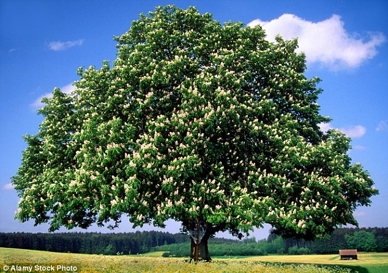
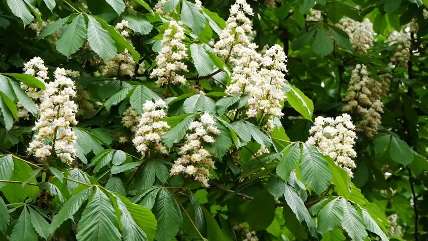

Aesculus hippocastanum
The common name "horse-chestnut" (often unhyphenated) is reported as having originated from the erroneous belief that the tree was a kind of chestnut (though in fact only distantly related), together with the observation that the fruit could help panting horses.
The seed extract standardized to around 20 percent aescin is used for its venotonic effect, vascular protection, anti-inflammatory and free radical scavenging properties. Primary indication is chronic venous insufficiency. A recent Cochrane Review found the evidence suggests that Horse Chestnut Seed Extract is an efficacious and safe short-term treatment for chronic venous insufficiency, but definitive randomized controlled trials are required to confirm the efficacy.
Aesculus hippocastanum is native to a small area in the Pindus Mountains mixed forests and Balkan mixed forests of South East Europe. However, it can be found in many parts of Europe as far north as Gästrikland in Sweden, as well as in many parks and cities in the United States and Canada.
Around the World
- The flower is the symbol of the city of Kiev (Ukraine).
- In Germany, horse-chestnuts are often found in beer gardens, particularly in Bavaria to further protect the cellars from the summer heat.
- In Britain and Ireland, the seeds are used for the popular children's game conkers.
Coomon Uses
- Decorative
- Medical
- Food
{kind=link}